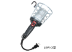

2023年
問題114 飲料用貯水槽の清掃に関する次の記述のうち，最も不適当なものはどれか．
（1）清掃時は，必要に応じてガード付き作業灯を取り付け，作業時の貯水槽内の安全な照明を確保する．
（2）高置水槽と受水槽の清掃は，原則として同じ日に行い，受水槽の清掃を行った後に高置水槽の清掃を行う．
（3）清掃終了後は，2回以上貯水槽内の消毒を行う．
（4）消毒後の水洗い及び水張りは，消毒終了後少なくとも30分以上経過してから行う．
（5）清掃終了後の水質検査における濁度の基準値は，5度以下である．
2023年
問題114 正解（5） 頻出度AAA
ダクニシキゴ（濁度2度以下，色度5度以下）である．
貯水槽の清掃について出題事項は次のとおり．
1．貯水槽の清掃は1年以内ごとに1回，定期に行う．①※
2．貯水槽清掃の作業者は常に健康状態に留意するとともに，おおむね6カ月ごとに，病原体がし尿に排せつされる感染症の罹患の有無（又は病原体の保有の有無）に関して，健康診断を受けること．又，健康状態の不良なものは作業に従事しないこと．②
3．作業衣及び使用器具は，貯水槽の清掃専用のものとすること．又，作業に当たっては，作業衣及び使用器具の消毒を行い，作業が衛生的に行われるようにすること．②
4．高置水槽又は圧力水槽の清掃は原則として受水槽の清掃と同じ日に行い，受水槽の清掃を行った後，高置水槽，圧力水槽等の清掃を行うこと．②③
逆にすると，清掃した高置水槽を清掃していない受水槽の水で洗うことになりかねない．
5．貯水槽内の沈殿物質及び浮遊物質並びに壁面等に付着した物質を洗浄等により除去し，洗浄を行った場合は，用いた水を完全に排除するとともに，貯水槽周辺の清掃を行うこと．③
6．貯水槽の清掃終了後，塩素剤を用いて2回以上貯水槽内の消毒を行い，消毒終了後は，消毒に用いた塩素剤を完全に排除するとともに，貯水槽内に立ち入らないこと．③
消毒薬は有効塩素50～100mg/Lの濃度の次亜塩素酸ナトリウム溶液又はこれと同等以上の消毒能力を有する塩素剤を用いること．②
消毒は2回以上行い，消毒後は30分以上時間をおくこと．②
7．貯水槽の水張り終了後，給水栓及び貯水槽内における水について，2021-117-1表の貯水槽清掃後の水質検査を実施し，基準を満たしていることを確認すること．基準を満たしていない場合は，その原因を調査し，必要な措置を講ずること．③
2023-114-1表 貯水槽清掃後の水質検査
| 1 | 残留塩素の含有率 | 遊離残留塩素の場合は100万分の0.2以上． 結合残留塩素の場合は100万分の1.5以上． |
| 2 | 色度 | 5度以下であること． |
| 3 | 濁度 | 2度以下であること． |
| 4 | 臭気 | 異常でないこと． |
| 5 | 味 | 異常でないこと． |
8．清掃によって生じた汚泥等の廃棄物は，廃棄物の処理及び清掃に関する法律，下水道法等の規定に基づき，適切に処理する．④
※ ①ビル管理法施行規則より
②建築物環境衛生維持管理要領
③清掃作業及び清掃用機械器具の維持管理の方法等に係る基準（告示117号）
④空気調和設備等の維持管理及び清掃等に係る技術上の基準 （告示119号）
①〜④は厚生労働省のサイト建築物衛生のページから全文を閲覧できる．
-(1) ガード付き作業灯2023-114-1図参照．

出典 株式会社ハタヤリミテッド
https://www.hataya.jp/products/lighting/post2043/